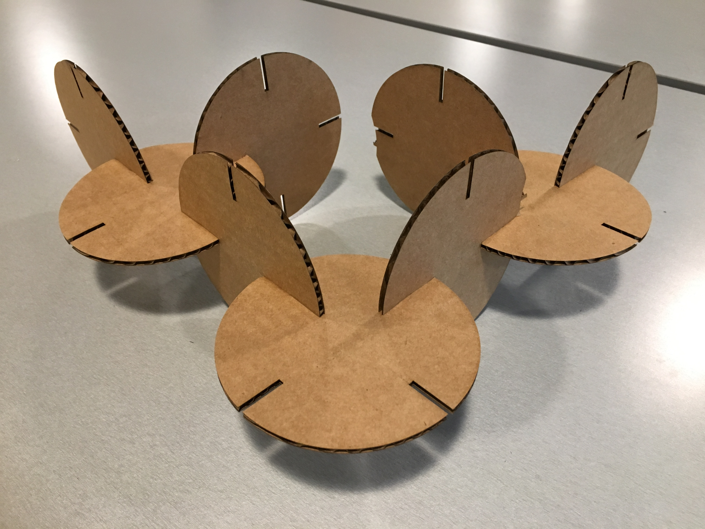
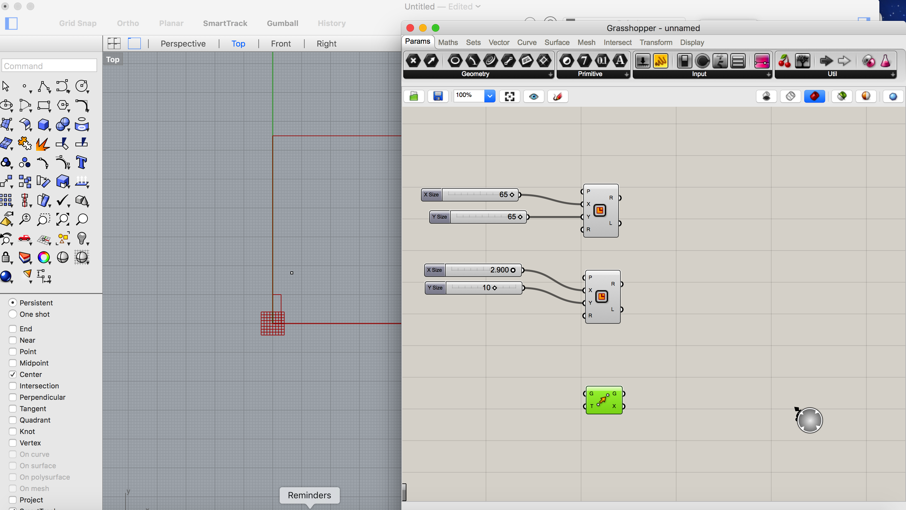
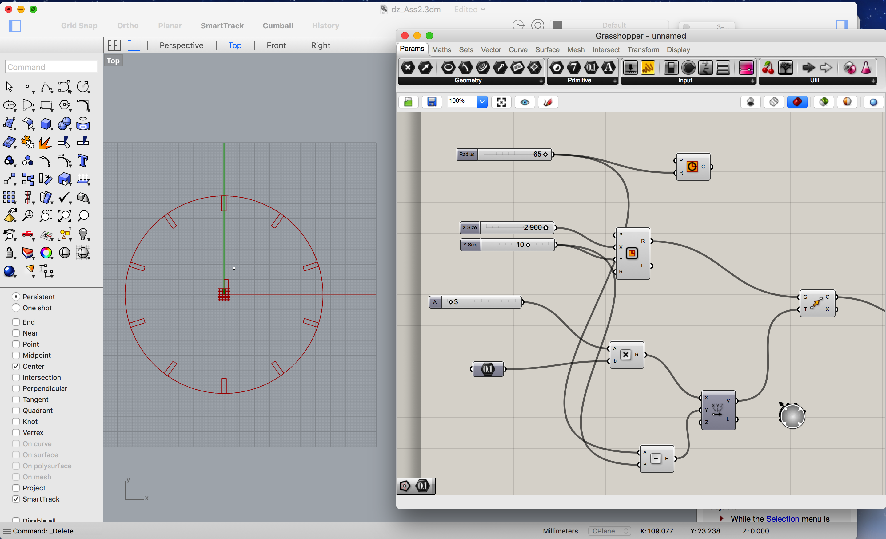
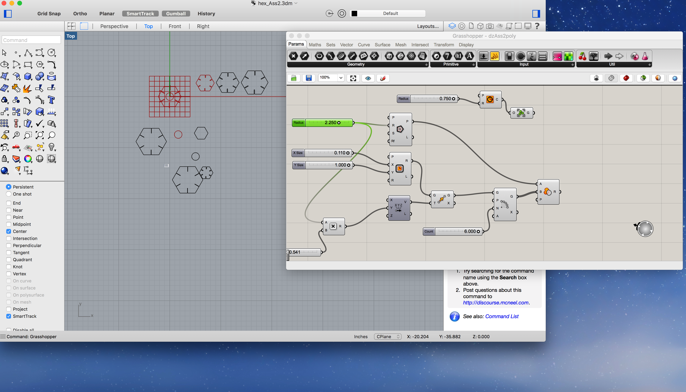
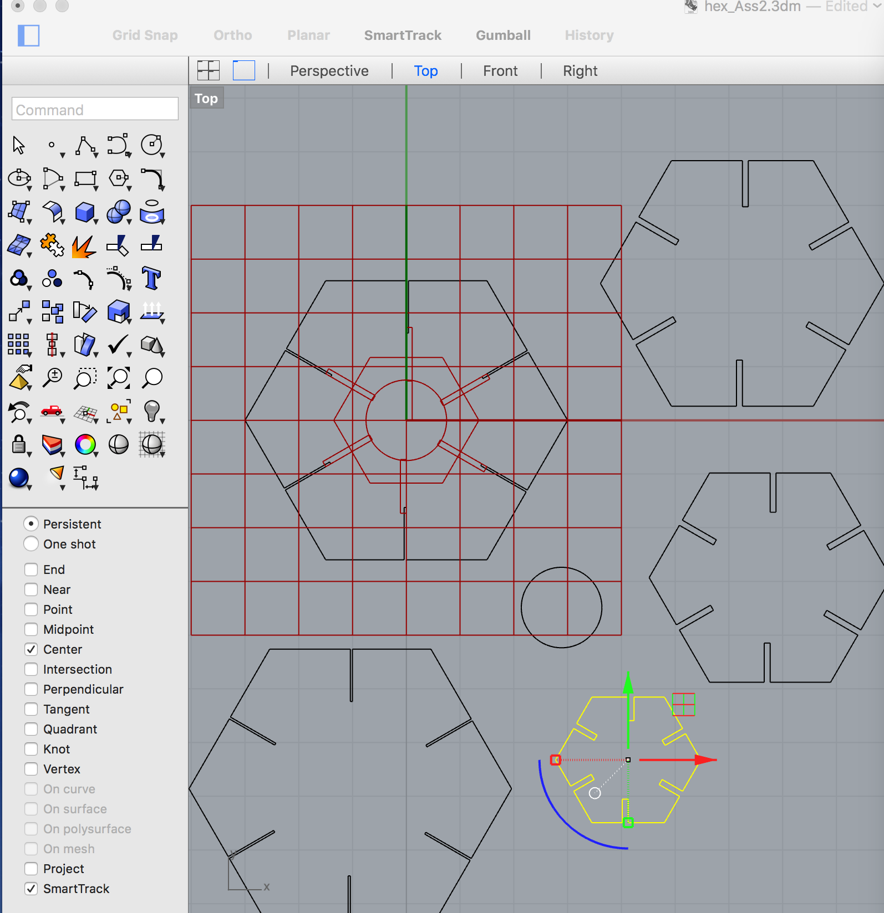
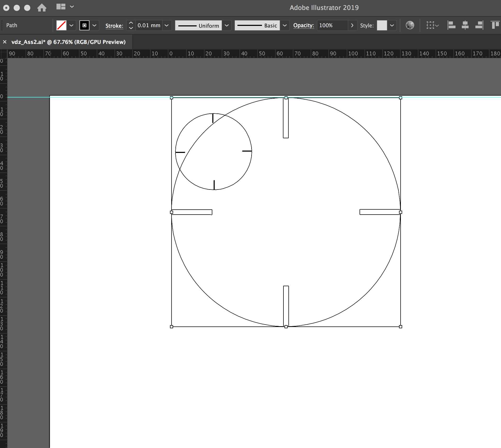
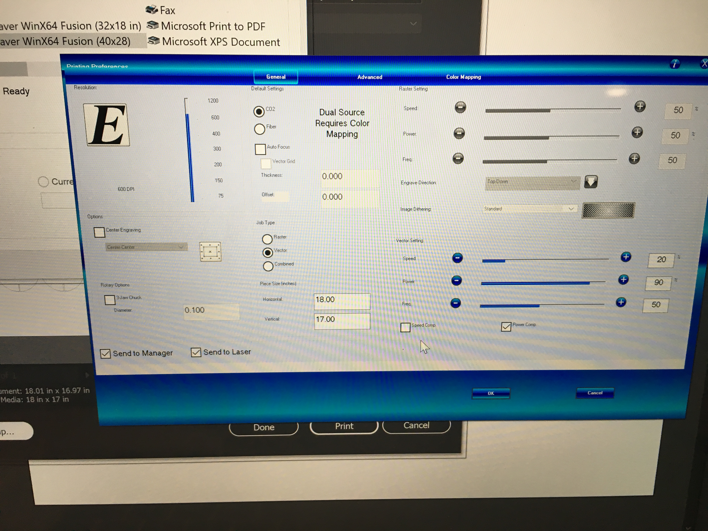
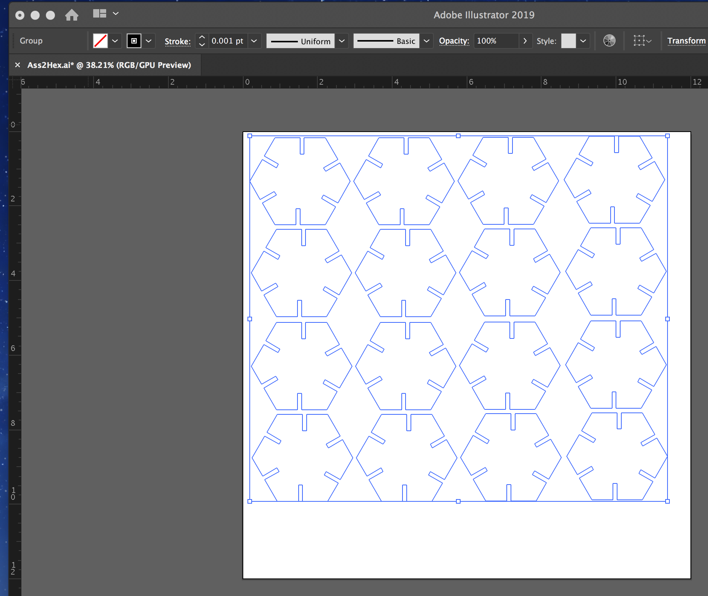
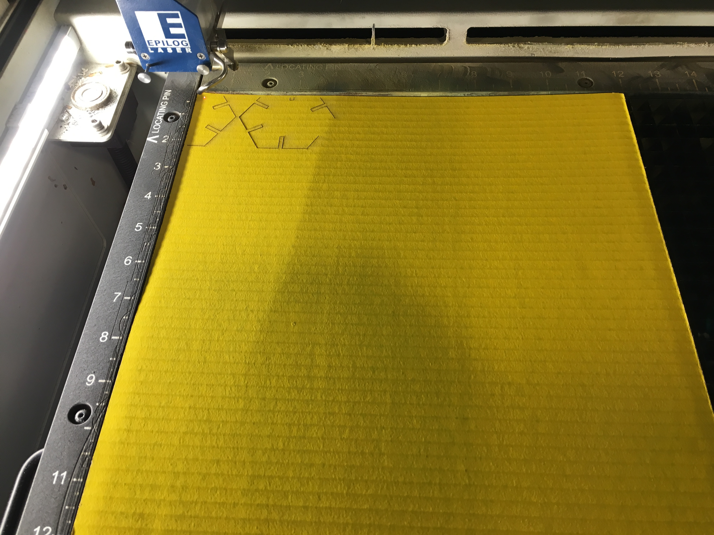
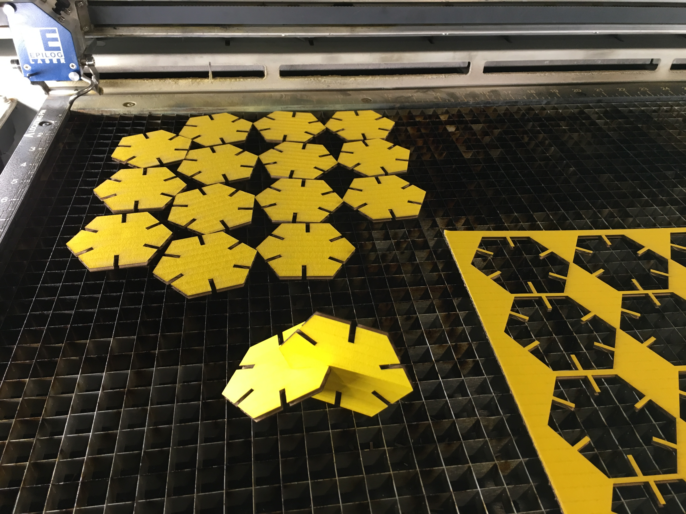

CAD Model + Fabricated Output
Native AI FileRhino/Grasshopper File

I chose to create simple shapes to focus on learning Rhino/Grasshopper.The above images reflect my
final outcomes: I laser cut circle pieces and hexagon pieces with different thicknesses of materials (cardboard). I decided to add
making a new/second shape to test my understanding, since I relied on help from my colleague Ani on the first go around.

I started with a creating a square using the Square component. However I was unable to shift the square to have a centerpoint alignment
with the xy vector on the Rhino canvas. A solve may have beenstarting with using the polygon component to create the square—my thinking is
starting with using the polygon component to create the square,...my thinking isa polygon is defined by radius and will generate a square
from it's center point.


I abandoned the square and first created the circle piece in GH, and then a hexagon using the polygon component.
For both shapes I proceeded as follows:
-I assigned a Radius parameter defining a maximum of width.
-Rectangle component
-Number slider each for X and Y dimensions attached with the X and Y ports of the Rectangle.
RELOCATING RECTANGLE ON THE SPHERE AND ABILITY TO RE-SIZE ELEMENTS
I was challenged to understand these next computational relationships which are required to create
radiating notches around the sphere—AND have the ability to change the geometry(rectangles and sphere)
simultaneously maintaining relativity of measurements or/and also— change dim's independently of one another.
With my colleagues help I achieved this as follows:
MOVING RECTANGLE:
-I created a Move parameter to adjust rectangle/notch to locate it at the top center of the circle.
-added a X/Y Vector component to tell the rectangle which direction to move along
-I added a Subtract parameter to which I attached the Circle geometry and the Y dimension of the Rectangle.
CHANGING DIMENSIONS RELATIVELY
-added a Multiply parameter
-and attached both a Number Slider and Number Parameter (which dictated the increment of the sldier)
to the above Multiply parameter.
-I joined the Multiply parameter to the X/Y Vector parameter.
At this point I attached the entire geometry to the Move parameter: attaching the Rectangle to the Geometry port
and the Vector to the T (motion) port. Which I then connected to a Polar Array parameter.
-A number slider was necessary to indictate the range of number of items in the polar array.
The last step was creating the negative space of the notch by connecting the Polar Array rectangles and the
Sphere to a Region Difference component.

I played with resizing the dimensions of my hexagon within Grasshopper.It worked:YAY.
I next exported a single shape to AI.

I had an issue initially but solved it by changing units to inches vs. of mm.

-I uploaded my AI file to the Mill lap top and proceeded to print.
Despite my AI file matching the size of my board(s),
with the hexagon I had a problem. Adjusting the positioning of the laser did NOT solve the problem. I re-hit print on the computer,
and this time it aligned and cut my shapes as defined in my AI file.

THANK YOU to our colleague Ani for his time and excellent guidance.